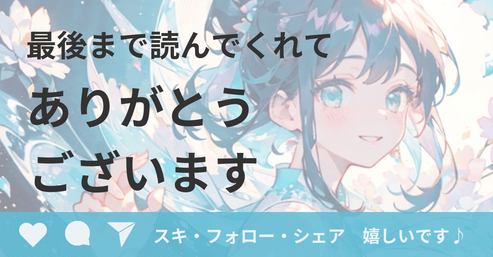

おはようございます。金田まりです。
育休から復帰して1週間が経ちました。
復職初日は「さあ、やるぞ！」と意気込んでいたのですが、翌日には次男が発熱。
さっそく保育園の洗礼を浴びて、全然仕事してません。できる気がしないぞ。
子どもの体調不良に振り回されるのは育休中も同じでしたが、仕事が始まるとその重みが全く違いますね。
そんな中で感じたキャリアと発信の葛藤について、等身大のログを残しておこうと思います。
隙間時間の価値が変わった
育休中に「何かスキルアップを」と思ってnoteを始めて気づけば7ヶ月。
試行錯誤しながらAIやライティングを学び、AIでイラストを生成。あの時間は私にとって母以外の何者かであれる、大切なひと時でした。
けれど復職して、本当の意味でのワーママになった今。
noteを楽しめる時間は、通勤中や子ども達を寝かしつけた後のほんの限られた時間だけになりました。
消えないマーケティング目線
私はスタートアップの起業家さんや、中小企業の新規事業をハンズオンで支援する人間です。
市場価値は？
ターゲットは？
販路は？
といつも問い続ける。
noteでも同じ思考が働きます。
この発信、誰の役に立つの？
もっと戦略的に書かなきゃダメでしょ
何を書こうとしてもマーケットインの思考が前に来る。前職の教員時代だったら、もっと純粋な気持ちでnoteを楽しめていた気がする。
ビジネス軸と創作軸どちらも、マーケ目線との折り合いがつかなくて正直ずっと苦戦していました。
Sakana AIの記事が教えてくれた、熱狂の意味
そんな迷いの中で、ある賭けをしてみました。
マーケティングの定石を一旦置いて、最近私が一番オタク的に注目しているSakana AIについての三部作を投稿してみたんですね。
イラストも専用に生成して挿絵とサムネに。
https://note.com/alive_sheep6563/n/n1052a97acb7a
https://note.com/alive_sheep6563/n/n0f80187a8d99
https://note.com/alive_sheep6563/n/n96d57d6c2558
特に3つ目の記事は、
・Namazuの進化的モデルマージ
・ソフトバンクの「AGENTIC STAR」
・国のAI補助金へのシフト
という先端技術や国の動向というマクロな動きを元に、個人がAIを創る時代が来ると考察したかなり尖った内容です。
書いてる時はノリノリでしたが、
正直「誰が読むんだこれ」と思ってました。
ところがその一本の記事をきっかけに、
フォロワーさんは5人増えた。
いやびっくり。
マーケの鉄則をいったん置いといて、自分の一次情報と熱狂をそのまま出したからこそ繋がりが生まれた瞬間。
この経験は私にとって大きな転機でした。
そしてマミートラックに全力で乗っかっていく
一方で現実のキャリアは甘くない。
立ち位置は明らかにマミートラックで、支援の最前線からは一歩退いたポジション。
時短勤務ですし、子供の急な発熱で穴を開けることもある。実際に穴を開け続けている。
同期が昇進していく中で、私のキャリアは間違いなくゆっくり進んでいます。
社内のポストの数を考えても、私が上席のポストに座る未来は全然見えません。
そう思うし、やっぱ未練も寂しさもある。
けれどそんな時、お世話になったBig4のコンサルタントさんの言葉に私の背中を押してもらっています。
仕事はいつでもできるから、
今は育児を楽しみましょう！
それが正解なのかは分かりませんが、その言葉を免罪符に私はマミートラックに全力で乗っかることに。
定時とともに席を立ち、
子どもの顔を思い浮かべて駅へ向かう。
かつての私なら、このフットワークは次の商談やタスク消化に向けられたものでした。
でも今は一刻も早く子どもの顔を見たい。
そう前向きに考えている自分を、ちょっとでも好きになれたらいいなと思ってます。
4月、新しいステージの現在地
キャリアの最短距離を走ることは、今の私にはできそうにありません。
でも時間が削ぎ落とされた今、隙間時間で書くnoteには以前よりも純粋な私を投影できている気がします。
仕事か育児か。
マーケティングか純粋な楽しみか。
どちらかを選ぶのではなく、その狭間で揺れ動いている今の自分をそのまま残すこと。
いろんな人が新しいステージに入る4月。
こんな停滞に見える時期があってもいい。
と、思わないとやっていけない気がする。
あなたの4月は、どんな始まりでしたか？
私は大きな異動がなくて本当に良かったです！
